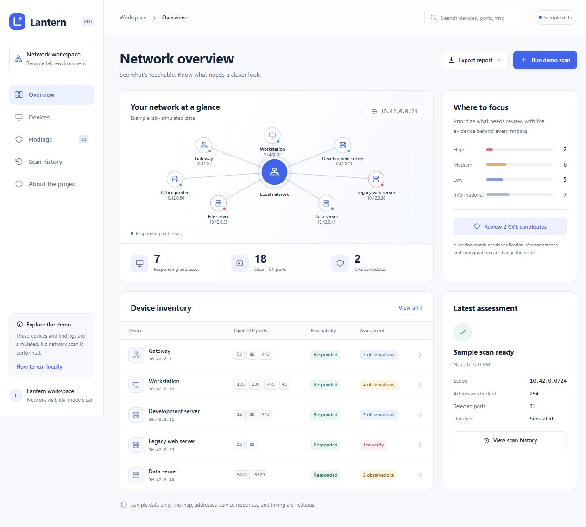

Local network assessment
Lantern
A local network assessment app that turns TCP scan results into a readable browser dashboard, with service evidence, prioritized findings, and downloadable reports.
- Python
- Socket
- Optional Nmap
- Vanilla JavaScript
- Searchable device inventory and inspectable service evidence.
- Scan progress, cancellation, and saved assessment history.
- HTML, Markdown, and JSON report exports.
Lantern separates observed services, port-based hints, and version-based CVE candidates so findings can be checked rather than assumed.
